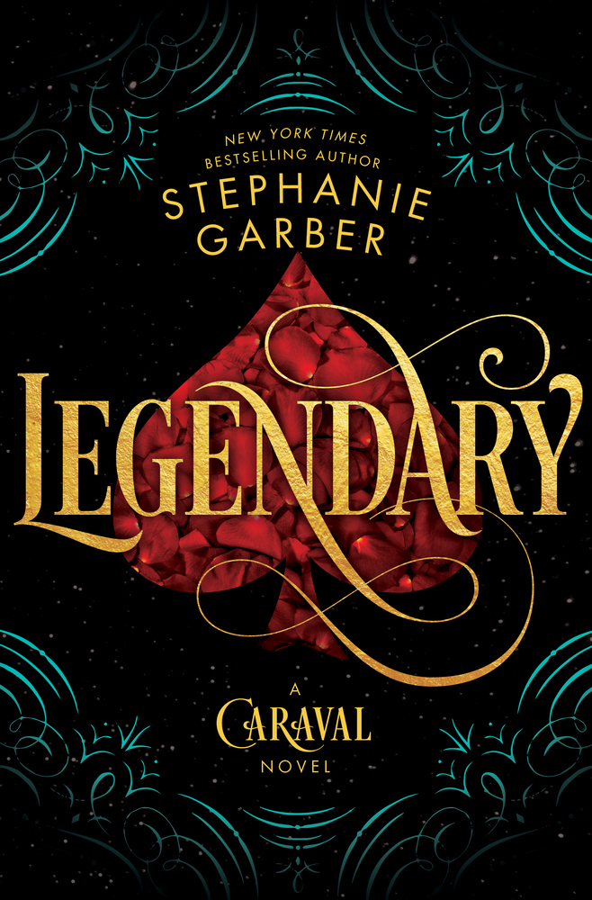

Legendary

˗ˏˋ ★ ★ ★ ★ ˎˊ˗
This book was not as good as Caraval because I did not like Tella's point of view as much as Scarletts. I did really like the plot and the storyline of this book and found it a lot more magical.
I really liked the plot of this book as I found the idea of Tella finding out Legend's name in exchange for her lost mother very interesting. I loved how she got the invitation for another round of Caraval as I really enjoyed reading about Caraval in the last book.
I liked how this game had higher stakes and we were able to learn more about this magical world they live in. I thought that Fates was a very interesting concept that was written very well. I also loved the mystery around Legend and the rumours that were going around about him.
I really liked the character of Jacks as I found him really charming and had great dialogue. Though I thought the character of Dante was a better fit for Tella as they had a better connection.
I liked Tella's role in the game and how she was a key to helping out the fates. I also loved how she was on a mission to find out more about her mother. I liked the destiny cards as well as it expanded on the magical aspect and added even more layers to the book.
My favourite part was the mystery in the book with the Fates and with Legend. I also loved the character of Jack's so much throughout the book.
I loved the final revelation that Dante was actually Legend. I actually knew this was going to happen because I accidently spoiled myself which was very stupid but it was a good plot twist that I did not expect.
I thought that Tella giving up her possible relationship with Dante/Legend and the search for her mother to save the world from the fates showed her character and the development she had throughout the book.
I like how it ended by setting up for the book and showing that Tella's story is far from over.
Overall I enjoyed this book as I thought the side characters and the plot was really good but I just didn't love that it was in Tella's point of view.
Write a Review